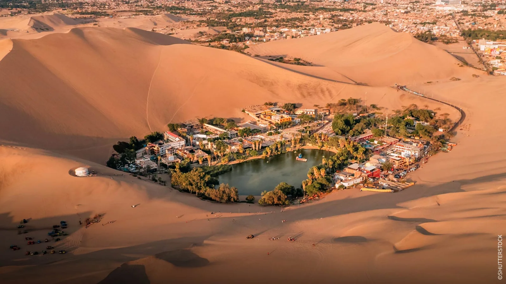

Temprano: el encuentro con el mar
Partimos desde Paracas hacia las Islas Ballestas, cuando las condiciones permiten navegar. Aves, lobos marinos y el Candelabro cambian tu mirada del Pacífico. El recorrido se adapta a las disposiciones del puerto.
EXPERIENCIAS A TU MEDIDA
Desde la vida del Pacífico hasta un oasis entre dunas. Diseñamos una escapada con tiempo para mirar, descubrir y detenerte.
Diseñemos mi viaje por WhatsApp
Partimos desde Paracas hacia las Islas Ballestas, cuando las condiciones permiten navegar. Aves, lobos marinos y el Candelabro cambian tu mirada del Pacífico. El recorrido se adapta a las disposiciones del puerto.
El almuerzo permite bajar el ritmo antes de continuar hacia Ica. Podemos sumar una experiencia de pisco o elegir una mesa tranquila, sin convertir la escapada en una sucesión de paradas.
Huacachina invita a contemplar el paisaje o sumar aventura. Conversamos sobre paseos en dunas y otras actividades, incluida una experiencia con camellos si está disponible. La caída del sol puede ser el cierre de tu ruta.
Sí. La propuesta se diseña contigo según tus días, intereses y preferencias. Las actividades y reservas se acuerdan antes de viajar.
Escríbenos por WhatsApp con tu idea y fechas aproximadas. No necesitas saber qué visitas pedir: te ayudamos a descubrir opciones.
Coordinamos tu recepción en el aeropuerto, traslados privados y un contacto por WhatsApp durante el viaje. El detalle se define en tu propuesta.